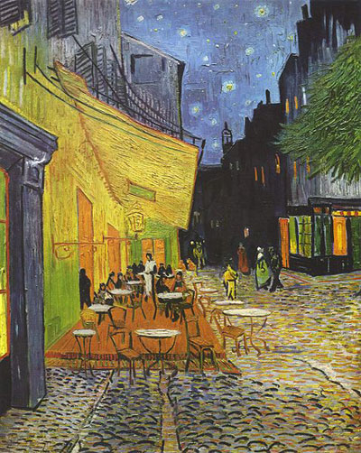

Cafe Terrace at Night (1888)

When I have a terrible need of — shall I say the word — religion. Then I go out and paint the stars.
– Vincent Van Gogh
The Starry Night (1889)

Further reading on the life and works of Vincent Van Gogh can be found at the Van Gogh museum website here.